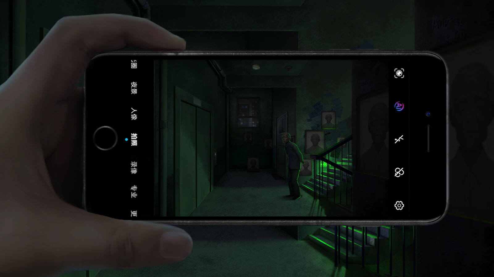
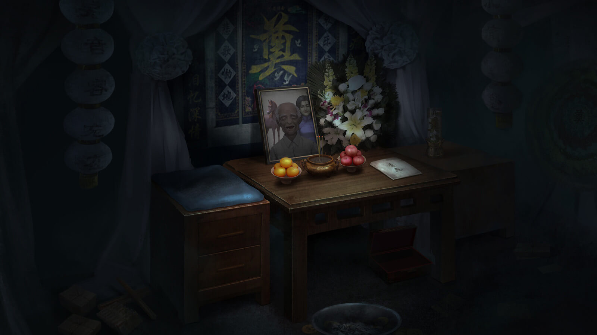
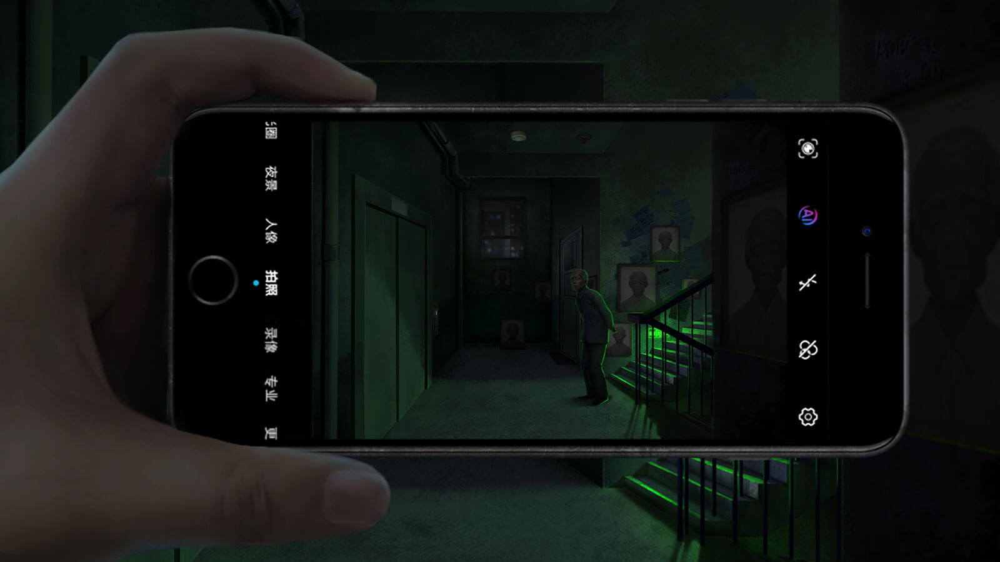
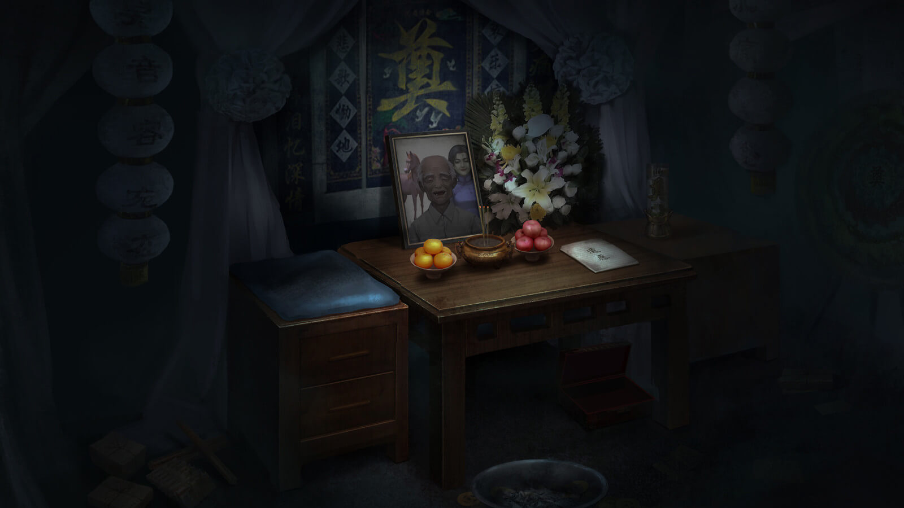
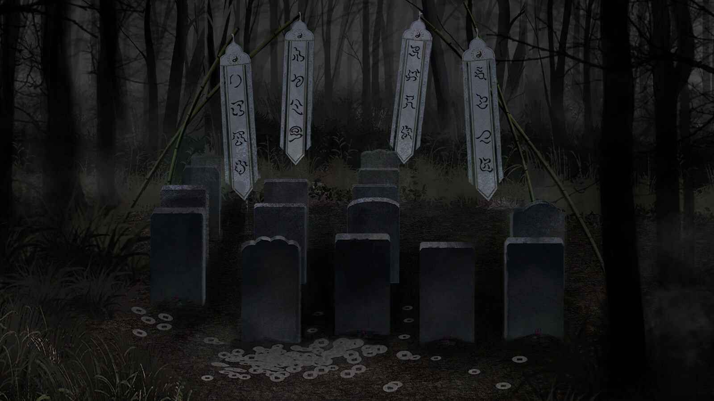
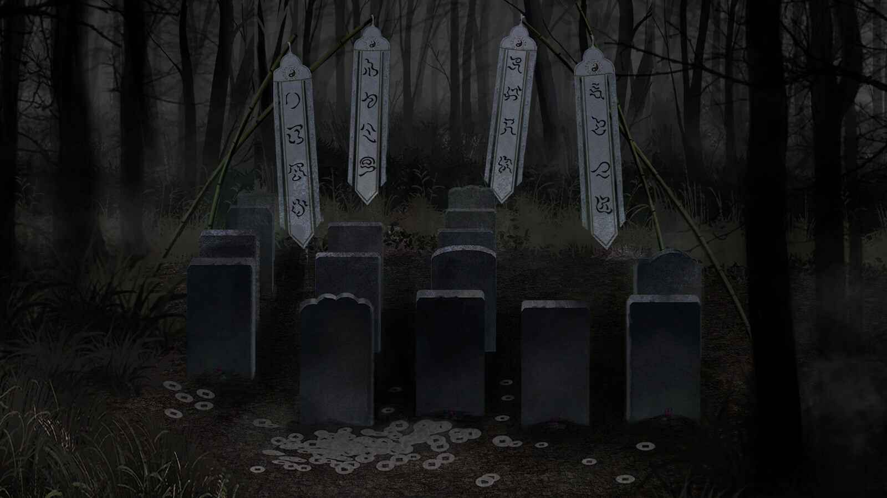
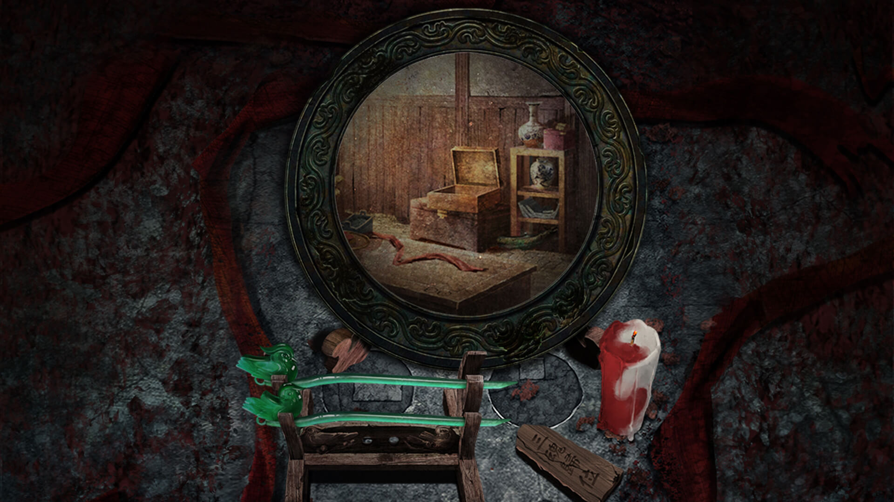
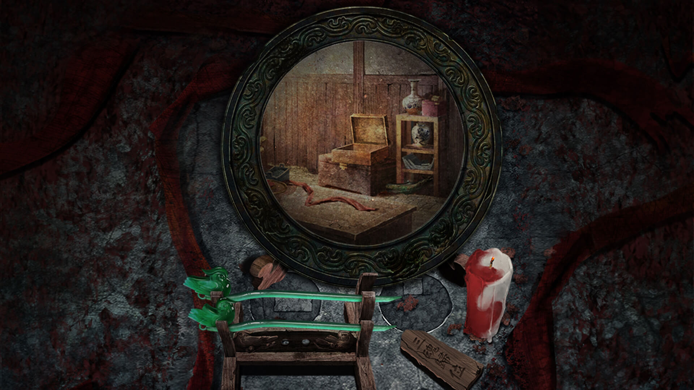

Paper Bride (纸嫁衣)
About this game

Paper Bride is a Chinese horror mystery puzzle game which includes traditional Chinese folk cultural elements. Download and experience it if you are interested in traditional Chinese culture.
Inspirations:
There are lots of creative horror stories in traditional Chinese folklore: paper figures
blocking the way, underworld spirits marching, bizarre temples, ghost trap... But these elements
are rarely used in games. After having nightmares about Strange Tales from a Chinese Studio,
Extensive Records of the Taiping Era, A Wicked Ghost and other novels and movies, we think it's
a shame that only we could experience the horror, so we made this traditional Chinese horror
mystery puzzle game to share with the world.
When the groom turns toward his bride on the wedding ceremony, her traditional red wedding dress
suddenly turns into an ominous white paper one before she vanishes without a trace.

Gallery

 



 



 
